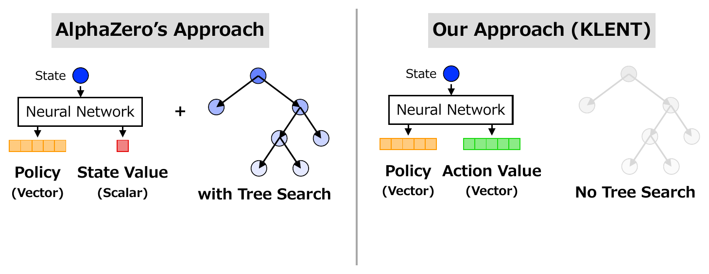
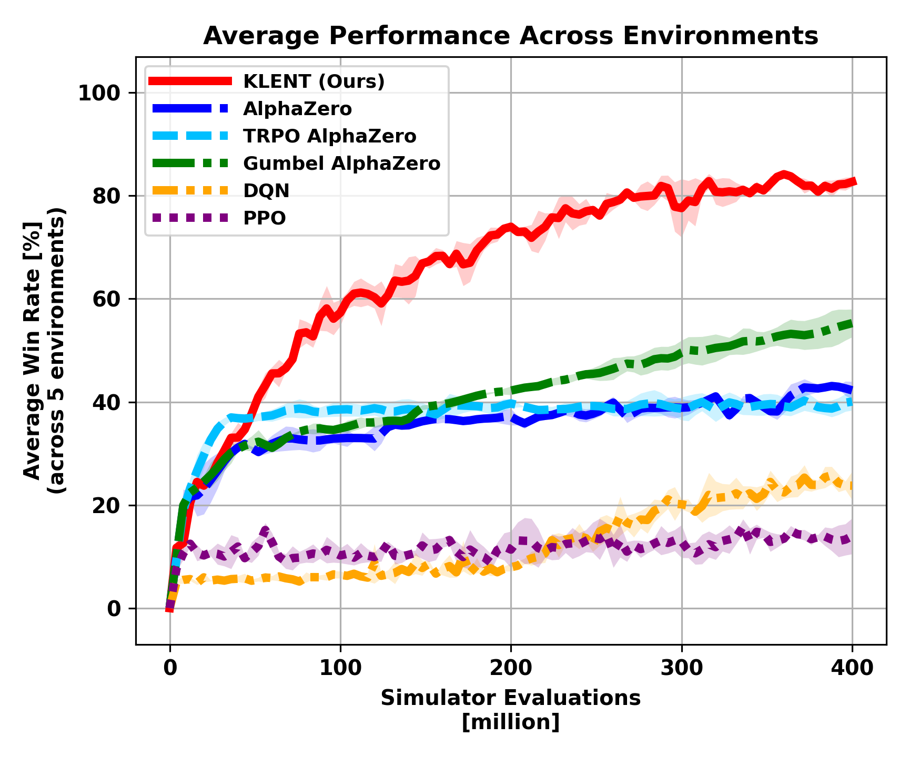

TL;DR
Efficient search-free RL for two-player games with convergence guarantees.
Abstract
Two-player games such as board games have long been used as traditional benchmarks for reinforcement learning. This work revisits a policy optimization method with reverse Kullback-Leibler regularization and entropy regularization and analyzes this combination in two-player zero-sum settings from theoretical and empirical perspectives. From a theoretical perspective, we investigate the stability of the policy update rule in two theoretical settings: game-theoretic normal-form games and finite-length games. We provide novel convergence guarantees and verify our theoretical results through numerical experiments on synthetic games. From an empirical perspective, we derive a practical model-free reinforcement learning algorithm based on the regularized policy optimization. We validate the training efficiency of our algorithm through comprehensive experiments on five board games: Animal Shogi, Gardner Chess, Go, Hex, and Othello. Experimental results show that our agent learns more efficiently than existing methods across environments.
Key Question
Search-based approaches have achieved strong performance in board games, but their look-ahead search makes training expensive. We ask whether a pure model-free RL algorithm can learn efficiently in two-player games without search during training.
Our Approach
KLENT combines reverse-KL regularization for gradual policy updates and entropy regularization for exploration. The resulting analytical policy update is used for action sampling, while lambda-returns provide stable action-value learning targets.

Theoretical Analysis
We analyze KLENT in normal-form games and finite-length games. In normal-form games, KLENT is linearly and locally convergent to the entropy-regularized Nash equilibrium under the stated condition. In finite-length games, KLENT converges to the entropy-regularized Nash equilibrium through backward-induction-style analysis. We also verify these theoretical predictions with numerical experiments on synthetic games.
Experiments
We evaluate KLENT on five board games: Animal Shogi, Gardner Chess, 9x9 Go, Hex, and Othello. KLENT achieves up to 4x higher training efficiency than existing methods without model-based search during training. Ablation studies show that KL regularization, entropy regularization, and lambda-returns are all important for consistently efficient learning.

Conclusion
Model-free RL can effectively learn in two-player games by properly revisiting regularized policy optimization.
BibTeX
@inproceedings{ota2026revisiting,
title = {Revisiting Regularized Policy Optimization for Stable and Efficient Reinforcement Learning in Two-Player Games},
author = {Ota, Kazuki and Osa, Takayuki and Omura, Motoki and Harada, Tatsuya},
booktitle = {Proceedings of the 43rd International Conference on Machine Learning},
year = {2026}
}